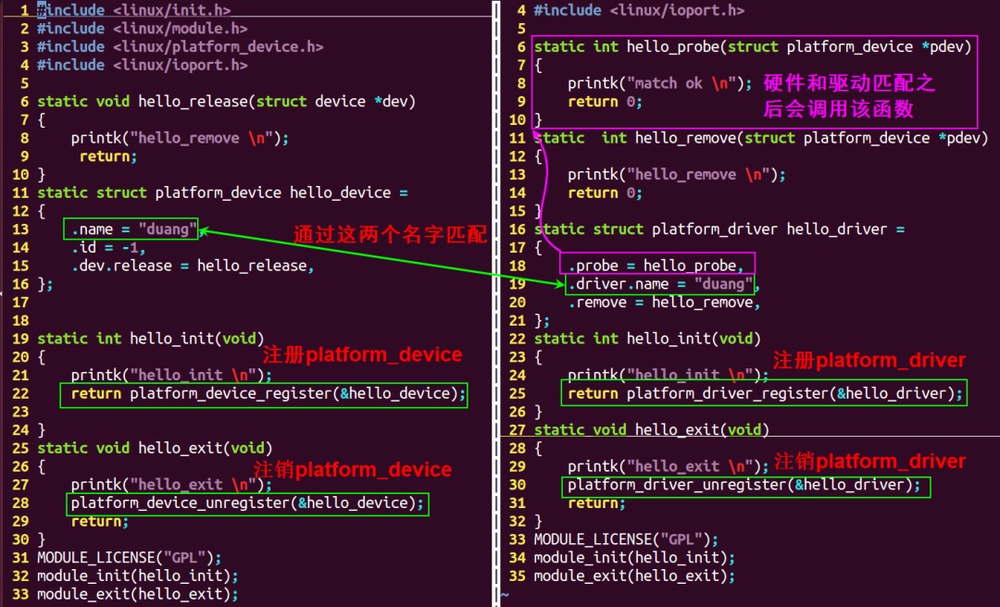
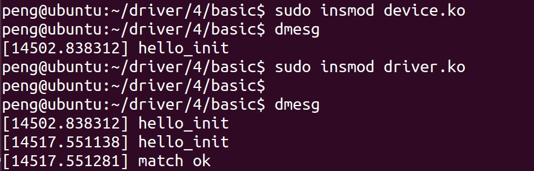
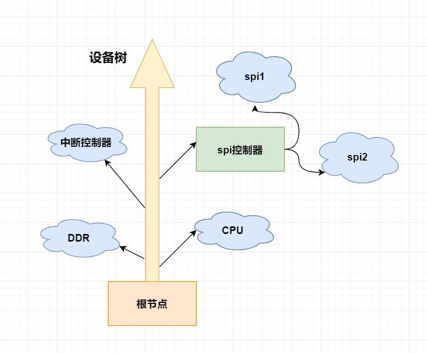
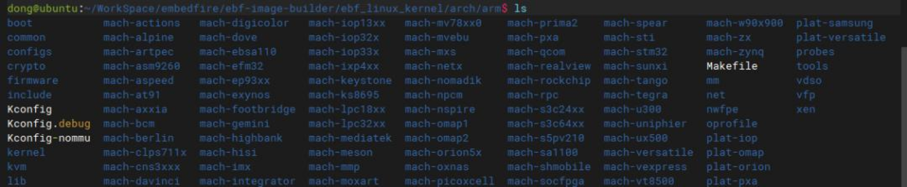
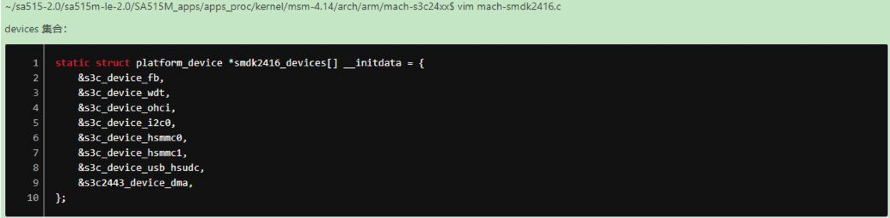
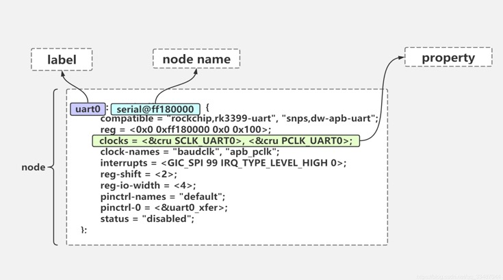
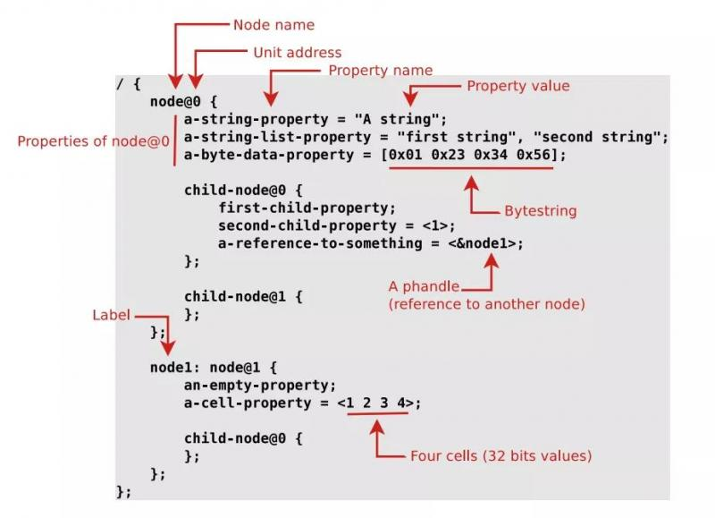
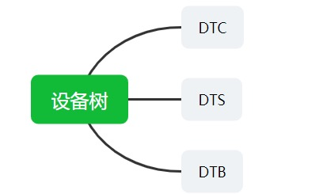

概述
- 总线驱动模型
- 设备树(是什么, 有啥好, 怎么办)
-
- 首先只有 Arm 架构需要设备树, x86 架构不需要设备树.
总线驱动模型
一 是什么
-
嵌入式系统中有很多的物理总线：I2c、SPI、USB、uart、PCIE、APB、AHB
-
linux 从 2.6 起就加入了一套新的驱动管理和注册的机制 platform 平台总线，是一条
虚拟的总线,并不是一个物理的总线。 -
相比 PCI、USB，它主要用于描述 SOC 上的片上资源。platform 所描述的资源有一个共同点：在 CPU 的总线上直接取址。
可见这个 platform 机制也是用于嵌入式方向.
最重要的两个结构体
struct platform_device-
- platform_device 用于描述设备硬件信息的结构体，包括该硬件的所有
资源（io，memory、中断、DMA 等等）。
- platform_device 用于描述设备硬件信息的结构体，包括该硬件的所有
struct platform_driver
关于struct resource
一个例子
struct resource {
resource_size_t start; //表示资源的起始值，
resource_size_t end; //表示资源的最后一个字节的地址， 如果是中断，end和satrt相同
const char *name; // 可不写
unsigned long flags; //资源的类型, 比如io，memory、中断、DMA等等
struct resource *parent, *sibling, *child;
};
#define IORESOURCE_MEM 0x00000200 //内存
#define IORESOURCE_IRQ 0x00000400 //中断
struct resource是嵌套在struct platform_device内部的一个成员, 是一个struct platform_device内部的一个数组成员.
二 为什么
与传统的 bus/device/driver 机制相比，platform 由内核进行统一管理，在驱动中使用资源 resource，提高了代码的安全性和可移植性。
总体来说这块需要看最原始的驱动程序的进化过程, 以 LED 灯驱动程序为例子.
1 原始版
参考第一篇 驱动程序 Hello World.
2 自定义 platform_device 版本


写驱动程序要分两个文件: device.ko 和 driver.ko, 并且分别加载insmod device.ko, insmod driver.ko
3 设备树版本
设备树版本其实是把 platform_device 的定义过程移交给了 dts, 然后由 bootloader 告知内核 dtb 文件位置,由内核自动解析 dtb 文件生成 platform_device
在没有设备树的 Linux 内核下，我们需要分别编写并注册
platform_device和platform_driver，分别代表设备和驱动。在使用设备树的时候，设备的描述被放到了设备树中，因此platform_device就不需要我们去编写了，我们只需要实现platform_driver即可
三 怎么办
参考这篇文章
设备树
一 是什么
- 什么是设备树？
设备树(Device Tree)，将这个词分开就是“设备”和“树”，描述设备树的文件叫做 DTS(Device Tree Source)，这个 DTS 文件采用树形结构描述板级设备，也就是开发板上的设备信息。
设备树的机制其实也是总线型的 BUS/Dev/Drv 模型，只是编写 Dev 的方式变了。即编写 设备树文件 .dts。dts 文件会被编译成 dtb 文件。dtb 文件会传给内核, 内核会解析 dtb 文件, 构造出一系列的 device_node 结构体,device_node 结构体会转换为 platform_device 结构体。
Linux 内核是从 V2.6 开始引入设备树的概念，其起源于 OF:OpenFirmware， 用于描述一个硬件平台的硬件资源信息，这些信息包括：CPU 的数量和类别、内存基地址和大小、总线和桥、外设连接、中断控制器和中断使用情况、GPIO 控制器和 GPIO 使用情况、Clock 控制器和 Clock 使用情况等等。
- 官方说明
The "Open Firmware Device Tree", or simply Device Tree (DT), is a data structure and language for describing hardware.
设备树是一种数据结构和一种用于描述硬件信息的语言。
- dts, dtc, dtb 分别是什么的缩写?
DTS (device tree source)
DTC (device tree compiler)
Device Tree Blob (.dtb)
-
设备树的特点：
-
- 实现驱动代码与设备硬件信息相分离。
-
- 通过被 bootloader(uboot)传递到 Linux 内核， 内核可以从设备树中获取对应的硬件信息。
-
- 对于同一 SOC 的不同主板，只需更换设备树文件即可实现不同主板的无差异支持，而无需更换内核文件，实现了内核和不同板级硬件数据的拆分。

二 有啥好
1 为什么要用设备树？
A
明白了设备树的概念，不妨思考一下：为什么要引入设备树？
在 Linux 内核 v2.6 版本以前，ARM 架构用于描述不同的硬件信息的文件都存放在 arch/arm/plat-xxx 和 arch/arm/mach-xxx 文件夹下，如下：

在这些文件内，都是通过手动定义不同的硬件设备，步骤非常繁琐

这样就导致了 Linux 内核代码中充斥着大量的垃圾代码，因为不同的板级他们的硬件信息都不相同，这些都是硬件特有的信息，对内核而言没有任何的意义，但是往往这部分代码特别的多，造成内核的冗余。
设备树的引入就是为了解决这个问题，通过引入设备树，我们可以直接通过它来传递给 Linux，而不再需要内核中大量的垃圾代码。
B
Device Tree 改变了原来用 hardcode 方式将 HW 配置信息嵌入到内核代码的方法，改用 bootloader 传递一个 DB 的形式。
对于基于 ARM CPU 的嵌入式系统，我们习惯于针对每一个 platform 进行内核的编译。但是随着 ARM 在消费类电子上的广泛应用（甚至桌面系统、服务器系统），我们期望 ARM 能够象 X86 那样用一个 kernel image 来支持多个 platform。在这种情况下，如果我们认为 kernel 是一个 black box，那么其输入参数应该包括：
1、识别 platform 的信息
2、runtime 的配置参数
3、设备的拓扑结构以及特性
对于嵌入式系统，在系统启动阶段，bootloader 会加载内核并将控制权转交给内核，此外，还需要把上述的三个参数信息传递给 kernel，以便 kernel 可以有较大的灵活性。在 linux kernel 中，Device Tree 的设计目标就是如此。
2 为什么 x86 上不需要设备树?
因为 arm 绝大部分设备无法自动探测到,所以要有个方式让系统知道有哪些设备, 一开始是程序写死的, 后来有了设备树.
x86/x64 上许多设备是基于 PCI/PCIe 总线的, 可以自动枚举到, 这种设备不需要设备树来告诉系统.
但是 Intel 还是搞了 ACPI, 也能将设备信息告知系统. 比如 x86 平台就说通过 ACPI 知道 CPU 有几个 core 的. 这套机制和设备树机制类似.
三 怎么办
(一) 总体流程
- 内核会解析 dtb 文件, 构造出一系列的 device_node 结构体, device_node 结构体会转换为 platform_device 结构体。
-
- 总体流程:
解析 dtb 文件 ----> 构造 device_node 结构体 ---> 转换为 platform_device 结构体
- 总体流程:
(二) 设备树语法
dts文件是一种ASCII文本格式的设备树描述，它有以下几种特性：
-
每个设备树文件都有一个根节点，每个设备都是一个节点。
-
节点间可以嵌套，形成父子关系，这样就可以方便的描述设备间的关系。
-
每个设备的属性都用一组 key-value 对(键值对)来描述。
-
每个属性的描述用
;结束
记住上面的几个核心特性，往下看！
1 数据格式
/dts-v1/;
/ {
node1 {
a-string-property = "A string";
a-string-list-property = "first string", "second string";
// hex is implied in byte arrays. no '0x' prefix is required
a-byte-data-property = [0x01 0x23 0x34 0x56];
child-node1 {
first-child-property;
second-child-property = <1>;
a-string-property = "Hello, world";
};
child-node2 {
};
};
node2 {
an-empty-property;
a-cell-property = <1 2 3 4>; /* each number (cell) is a uint32 */
child-node1 {
};
};
};
-
/dts-v1/;：表示这是一个 dts 设备树文件 -
/：表示根节点 -
node1、node2：表示根节点下的两个子节点 -
child-node1、child-node2：表示子节点 node1 下的两个子节点 -
a-string-property = "A string";：字符串属性，用双引号表示 -
cell-property = <0xbeef 123 0xabcd1234>;：32bit 的无符号整数，用尖括号表示 -
binary-property = [0x01 0x23 0x45 0x67];：二进制数据用方括号表示 -
a-string-list-property = "first string", "second string";：用逗号表示字符串列表
2 数据结构

DeviceTree的结构非常简单，由两种元素组成：Node(节点)和Property(属性)。
[label:] node-name[@unit-address] {
[properties definitions]
[child nodes]
}
想象一下，一棵大树，每一个树干都认为是一个节点，每一片树叶，想作一个属性！
-
label：节点的一个标签，可以作为别名 -
node-name：节点的名称 -
unit-address：单元地址，也就是控制器的地址 -
properties：属性名称 -
definitions：属性的值

3 详细属性介绍
- 以下代码段为例子
/dts-v1/;
/ {
compatible = "acme,coyotes-revenge";
#address-cells = <1>;
#size-cells = <0>;
cpus {
cpu@0 {
compatible = "arm,cortex-a9";
reg = <0>;
};
cpu@1 {
compatible = "arm,cortex-a9";
reg = <1>;
};
};
serial@101f0000 {
#address-cells = <1>;
#size-cells = <1>;
compatible = "arm,pl011";
reg = <0x101f0000 0x1000 >;
};
};
3.1 基本属性
下面几个属性是基本属性
-
/dts-v1/;：表示一个 dts 设备树文件 -
/：表示根节点 -
compatible = "acme,coyotes-revenge"; -
compatible：“兼容性” 属性，这是非常重要的一个属性, 兼容属性，由该属性值来匹配对应的驱动代码。
-
"acme,coyotes-revenge"：该值遵循"manufacturer,model"格式manufacturer表示芯片厂商，model表示驱动名称
compatible 是一个字符串列表。列表中的第一个字符串指定节点在表单中表示的确切设备"
, "。 例如，飞思卡尔 MPC8349 片上系统 (SoC) 有一个串行设备，可实现 National Semiconductor ns16550 寄存器接口。因此，MPC8349 串行设备的 compatible 属性应为：
compatible = "fsl,mpc8349-uart", "ns16550". 在这种情况下，fsl,mpc8349-uart 指定确切的设备， ns16550 声明它与 National Semiconductor 16550 UART 的寄存器级兼容。
-
cpus：表示一个子节点，该子节点下又有两个子节点，分别为cpu0和cpu1。 -
cpu@0：遵循<name>[@<unit-address>]格式 -
<name>：ascii 字符串，表示节点名称 -
<unit-address>：单元地址，设备的私有地址，在节点reg属性中描述。
3.2 寻址属性
下面几个属性与寻址相关的
-
#address-cells：表示reg属性中地址字段的单元个数，每个单元 32bit，即用多少个 32bit 单元表示地址信息。 -
#size-cells：表示reg属性中表示长度字段的单元个数，每个单元 32bit，即用多少个 32bit 单元表示长度信息。 -
reg：该属性一般用于描述设备地址空间资源信息，一般都是某个外设的寄存器地址范围信息。其式为reg = <address1 length1 [address2 length2] [address3 length3] ... >。每个地址值都是一个或多个 32 位整数的列表，称为单元格。同样，长度值可以是单元格列表，也可以是空的
3.3 中断属性
3.4 其他属性
(三) DTS 和 DTC 和 DTB 使用
整个设备树牵涉面比较广，即增加了新的用于描述设备硬件信息的文本格式，又增加了编译这个文本的工具，同时还得支持 Bootloader 解析设备树，并将信息传递给内核。
整个设备树包含 DTC（device tree compiler），DTS（device tree source）和 DTB（device tree blob）。

(四) 基于设备树的 LED 驱动实验
待补充
关于总线的拓展知识点
内核总线相关结构体变量
- 内核维护的所有的
总线都需要用以下结构体注册一个变量。
struct bus_type {
const char *name;
const char *dev_name;
struct device *dev_root;
struct device_attribute *dev_attrs; /* use dev_groups instead */
const struct attribute_group **bus_groups;
const struct attribute_group **dev_groups;
const struct attribute_group **drv_groups;
int (*match)(struct device *dev, struct device_driver *drv);
int (*uevent)(struct device *dev, struct kobj_uevent_env *env);
int (*probe)(struct device *dev);
int (*remove)(struct device *dev);
void (*shutdown)(struct device *dev);
int (*online)(struct device *dev);
int (*offline)(struct device *dev);
int (*suspend)(struct device *dev, pm_message_t state);
int (*resume)(struct device *dev);
const struct dev_pm_ops *pm;
struct iommu_ops *iommu_ops;
struct subsys_private *p;
struct lock_class_key lock_key;
};
- platform 总线变量的定义
struct bus_type platform_bus_type定义如下：
struct bus_type platform_bus_type = {
.name = "platform",
.dev_groups = platform_dev_groups,
.match = platform_match,
.uevent = platform_uevent,
.pm = &platform_dev_pm_ops,
};
-
- 其中最重要的成员是.match。
-
- 当有设备的硬件信息注册到
platform_bus_type 总线的时候，会遍历所有 platform 总线维护的驱动， 通过名字来匹配，如果相同，就说明硬件信息和驱动匹配，就会调用驱动的platform_driver ->probe函数,初始化驱动的所有资源，让该驱动生效。
- 当有设备的硬件信息注册到
也就是内核维护了许多 bus_type 实例, 有一些 bus_type 是对应真实物理总线的, 比如 I2c、SPI、USB、uart、PCIE、APB、AHB 同时内核也维护了一条虚拟总线就是名为
platform的platform_bus_type 总线